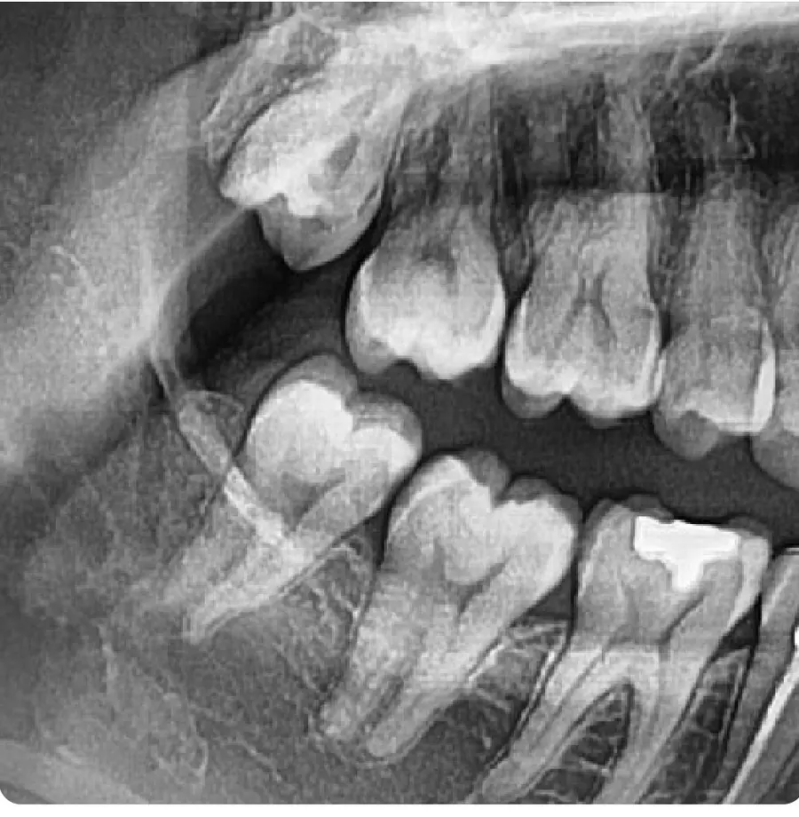

نسخه استخراجشده؛ ترجمه یا تأیید علمی انجام نشده است. وضعیت: captured
بیمار از دو روز پیش در مولر دوم پایین راست درد دارد. درد با سرد و گرم تحریک میشود و ماندگار است، اما با فشار و جویدن بدتر نمیشود. یک دندانپزشک گفته دندان عقل را بکش؛ دیگری گفته به عقل دست نزن و مولر را برای درمان ریشه بفرست.

پاسخ ماندگار به سرد و گرم، آن هم بدون درد در دق، به یک منشأ پالپی اشاره میکند، نه پریاپیکال. تا اینجا توجه به سمت پالپ همان مولر میرود.
علت روشنی پشت این درد دیده نمیشود. وقتی علت واضحی در کار نیست، حق نداریم تشخیص را قطعی فرض کنیم؛ درد ارجاعی باید روی میز بماند.
لوکالیزیشن درد پالپی در مولرها به بیاعتمادی مشهور است: بیمار میتواند دندان، و حتی فک را، اشتباه نشان دهد.
دندان عقل بالا خارج از اکلوژن است؛ یعنی عقل پایین آنتاگونیست فانکشنال ندارد و ارزش استراتژیک نگهداشتنش عملاً صفر است. همین یک نکته کشیدنش را توجیه میکند، بیآنکه لازم باشد اول ثابت کنیم این دندان مقصر درد است.
پرسش پالپی باقی است: پالپیت یا درد ارجاعی. این تشخیص افتراقی کار متخصص ریشه است، نه متخصص پروتز. پس بعد از خارج کردن عقل، بیمار برای تست حیاتی پالپ ارجاع میشود. سپردن چیزی که بیرون از حیطهی توست به آدم درستش، خودش بخشی از تصمیم درست است.
منطق کلی ساده است: بیارزش را بردار، عدمقطعیت را کم کن، بیرون حیطه را واگذار کن.
نوع سؤال: ساخت کلمه · 2 خانه
حروف منبع: ک · ف